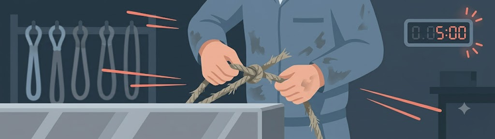
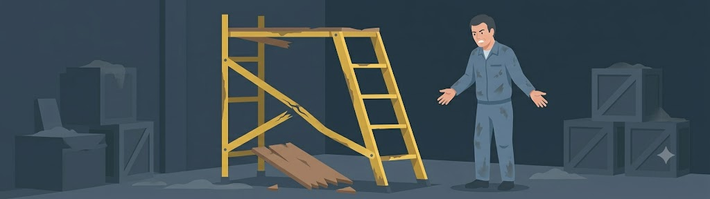
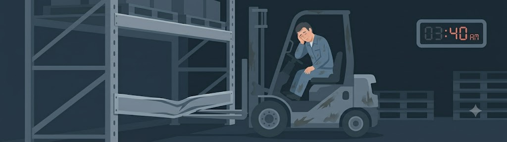

«Да я всю жизнь так точу, сорок лет на заводе! Экран этот только обзор загораживает. А очки... так я свои надел, темные, в них и видно все, и в глаза ничего не летит. Че мне сделается, я аккуратно».
В чем скрытая опасность: У сотрудника сформировался ложный барьер безопасности. Он считает бытовые очки достаточной защитой, а правила ОТ и СИЗ — избыточными.
⚡ На заметку СОТу: Рабочий штатные СИЗ бытовыми очками, потому что из-за стажа не верит в реальный риск. В чек-лист пишем корневой мотив: «Ложное чувство безопасности / подмена СИЗ бытовыми предметами». Наказывать бесполезно — нужно разбирать конкретные риски.
Определяем ускоряющее поведение в темном складе

«Нам до конца смены надо еще три вагона отгрузить, мастер сказал — пока не закончим, домой никто не пойдет. Если я сейчас буду ждать исправные стропы со склада, мы до утра тут просидим!»
В чем скрытая опасность: Прямое давление производственного плана. Страх сорвать сроки смены или получить выговор от мастера сильнее, чем страх получить травму.
⚡ На заметку СОТу: В чек-лист пишем причину: «Спешка из-за производственного плана». Это сигнал руководителю службы для корректировки KPI мастеров участков.
Определяем вынужденное отклонение от правил

«Я бы рад ограждение поставить, но нам подмости выдали со сломанными креплениями. Снабжение новые третью неделю везет. По-другому туда не залезть».
В чем скрытая опасность: Системный сбой организации труда. Работник становится нарушителем поневоле, так как предприятие не обеспечило его исправным оборудованием.
⚡ На заметку СОТу: В чек-лист пишем: «Сбой в цепочке снабжения». Штрафовать сотрудника здесь — грубейшая ошибка. Информация должна уйти шефу для закупки СИЗ.
Определяем перегрузку в ночную смену

«Я уже вторую смену подряд работаю, подменяю напарника. Глаза просто слипаются. Звук удара услышал, только когда поддон посыпался...»
В чем скрытая опасность: Физиологический фактор. Организм блокирует внимание. Работник рискует не из-за халатности, а из-за банального истощения ресурса внимания.
⚡ На заметку СОТу: В чек-лист пишем: «Переработки / Усталость в ночную смену». Эти данные помогут аргументированно требовать от производства пересмотра графиков.